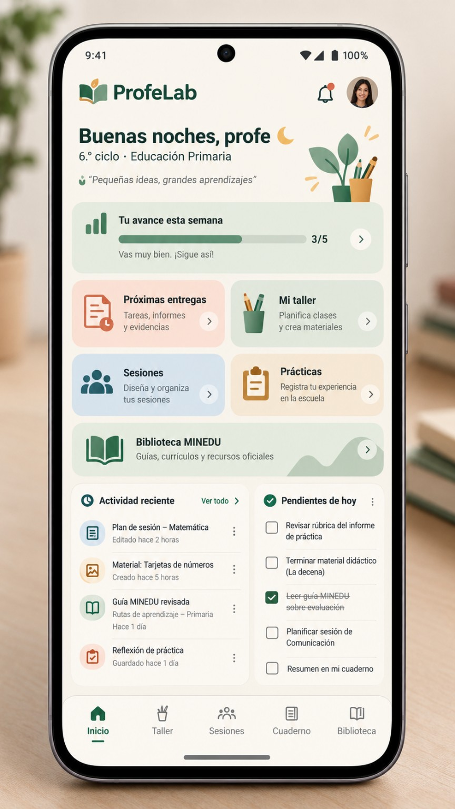
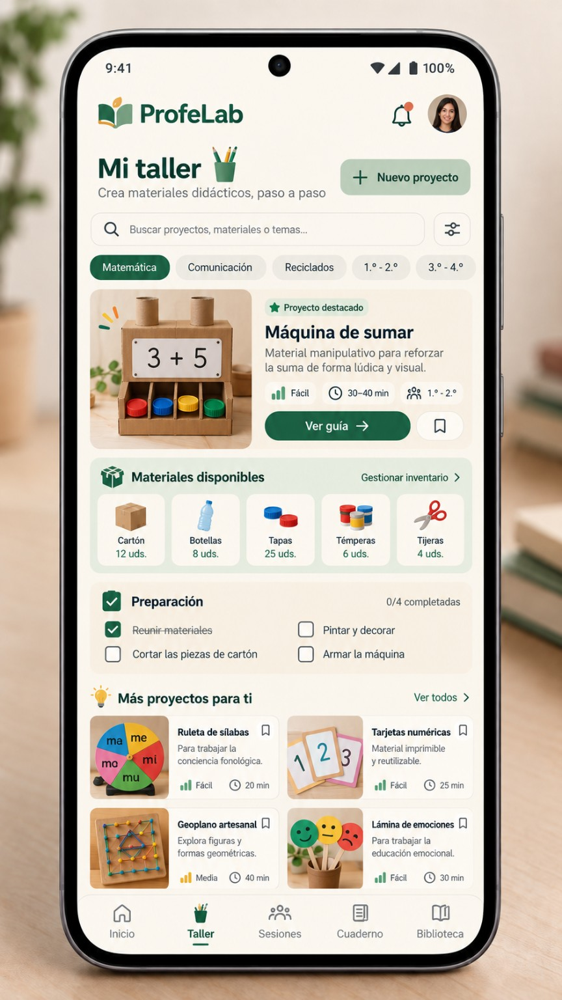
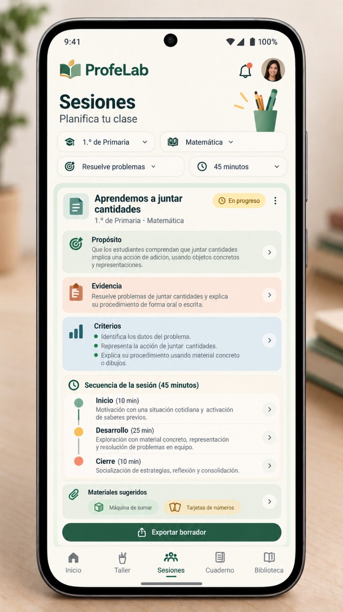
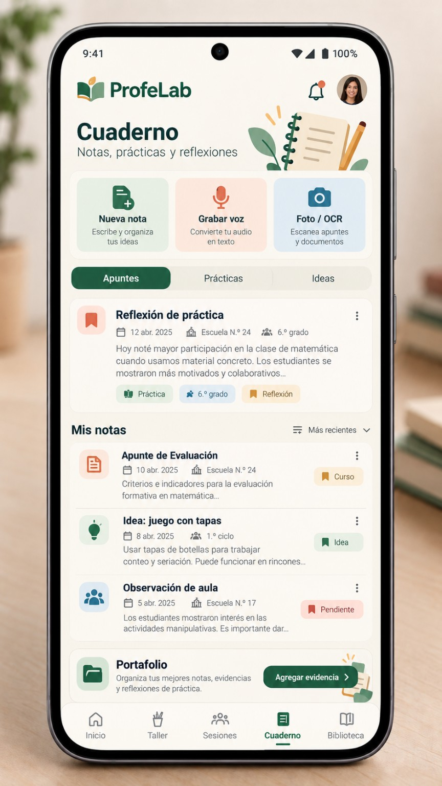
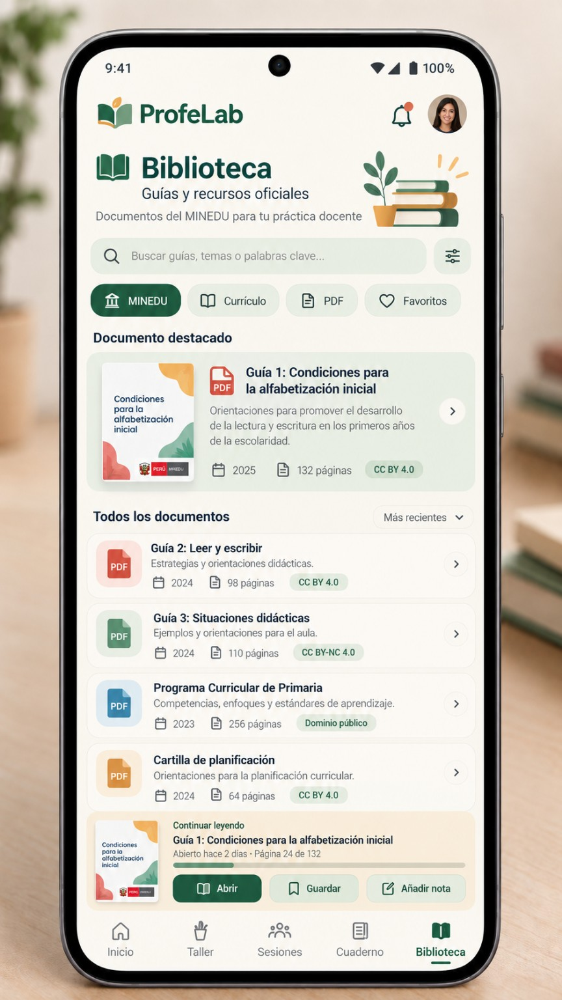

1. Inicio
Imagen original aprobada · 864 × 1536 px

2. Taller
Imagen original aprobada · 864 × 1536 px

3. Sesiones
Imagen original aprobada · 864 × 1536 px

4. Cuaderno
Imagen original aprobada · 864 × 1536 px

5. Biblioteca
Imagen original aprobada · 864 × 1536 px